clc
clear
load('platform_resp.mat');
%Read Magnitude and Phase Response from experimental data
Mag = abs(MagR);
Phase = angle(MagR);
figure semilogx(Freq,20*log10(Mag)); xlabel('Frequency(Hz)') ylabel('Magnitude(dB)') axis('tight') title('Magnitude Response')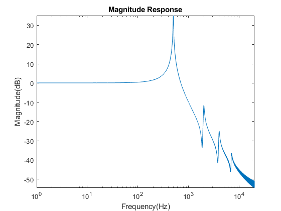
figure semilogx(Freq,Phase) xlabel('Frequency(Hz)') ylabel('Phase') axis('tight') title('Phase Response (radians)')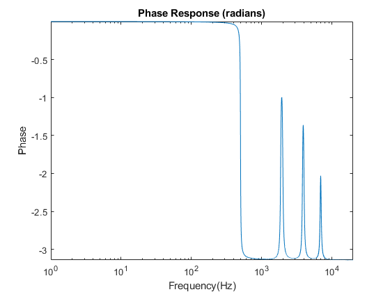
From the Frequency Response plots, there are 4 resonant modes induced in the system, hence it is modelled as 8 pole and 6 zeros system as a results of the location of the peaks and shalows in the magnitude response.
sys = frd(MagR,Freq*2*pi); G = tfest(sys,8,6);
opts = bodeoptions('cstprefs'); opts.PhaseVisible = 'off'; opts.FreqUnits = 'Hz'; semilogx(Freq,20*log10(Mag)); hold on bodeplot(G,opts,'red'); legend('Nanopositioner ', 'Estimated System','Location','southwest')
Warning: Ignoring extra legend entries.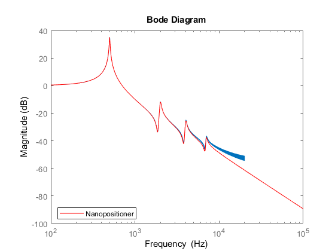
opts = bodeoptions('cstprefs'); opts.PhaseUnits = 'rad'; opts.MagVisible = 'off'; opts.FreqUnits = 'Hz'; semilogx(Freq,Phase); hold on bodeplot(G,opts,'red'); legend('Nanopositioner ', 'Estimated System','Location','southwest')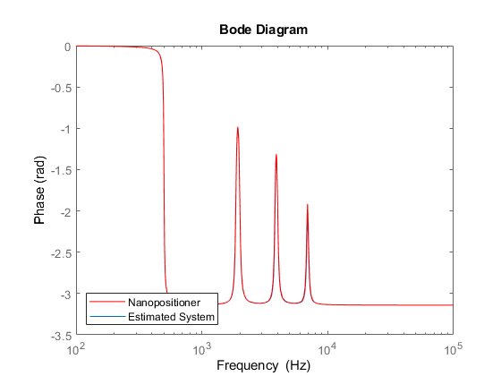
G % estimated state space system
[r,p,k] = residue(G.Numerator,G.Denominator);
G =
1.342e07 s^6 + 3.938e10 s^5 + 3.42e16 s^4 + 5.328e19 s^3 + 1.854e25 s^2
+ 1.088e28 s + 1.928e33
---------------------------------------------------------------------------
s^8 + 3199 s^7 + 2.738e09 s^6 + 4.857e12 s^5 + 1.656e18 s^4 + 1.219e21 s^3
+ 2.091e26 s^2 + 2.136e28 s + 1.905e33
Continuous-time identified transfer function.
Parameterization:
Number of poles: 8 Number of zeros: 6
Number of free coefficients: 15
Use "tfdata", "getpvec", "getcov" for parameters and their uncertainties.
Status:
Estimated using TFEST on frequency response data "sys".
Fit to estimation data: 99.9%
FPE: 2.326e-06, MSE: 2.323e-06
[num_1,den_1] = residue(r(1:2),p(1:2),0); G1 = tf(real(num_1(2)),den_1);
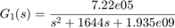
[num_2,den_2] = residue(r(3:4),p(3:4),0); G2 = tf(real(num_2(2)),den_2);
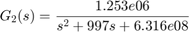
[num_3,den_3] = residue(r(5:6),p(5:6),0); G3 = tf(real(num_3(2)),den_3);
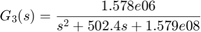
[num_4,den_4] = residue(r(7:8),p(7:8),0); G4 = tf(real(num_4(2)),den_4);
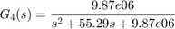
G_comp = G1+G2+G3+G4;
[num,den] = tfdata(G_comp);
syms s
t_sym = poly2sym(cell2mat(num),s)/poly2sym(cell2mat(den),s);
char = latex(t_sym)
char =
'\frac{\frac{3603061052953437\,s^6}{268435456}+\frac{5133228042542267\,s^5}{131072}+34201960011978316\,s^4+53190017306428194816\,s^3+18535717911085316239785984\,s^2+10881908091434080772873519104\,s+1928359649544455558686253089030144}{s^8+\frac{7034612434488761\,s^7}{2199023255552}+\frac{5741166758948537\,s^6}{2097152}+\frac{2486760026298577\,s^5}{512}+1656442354377754880\,s^4+1218871679859894779904\,s^3+209140172229026439596343296\,s^2+21356621499507234816277872640\,s+1904834843397118558787398335987712}'
![$$\frac{\frac{3603061052953437\,s^6}{268435456}+\frac{5133228042542267\,s^5}{131072}+34201960011978316\,s^4+53190017306428194816\,s^3+18535717911085316239785984\,s^2+10881908091434080772873519104\,s+1928359649544455558686253089030144}{s^8+\frac{7034612434488761\,s^7}{2199023255552}+\frac{5741166758948537\,s^6}{2097152}+\frac{2486760026298577\,s^5}{512}+1656442354377754880\,s^4+1218871679859894779904\,s^3+209140172229026439596343296\,s^2+21356621499507234816277872640\,s+1904834843397118558787398335987712}$$](sysID_m_eq09596920556017011124.png)
figure bode(G_comp)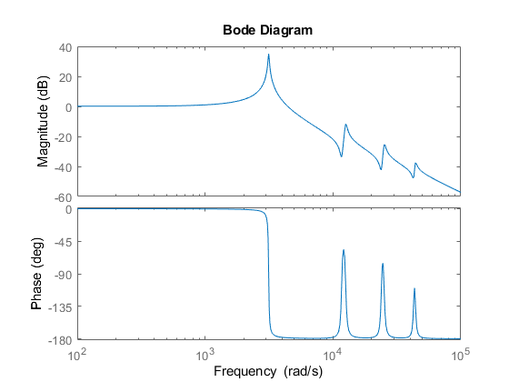
Open Loop Simulation
T = 2*(1/40); fs = 44100; t = 0:1/fs:T-1/fs; x = 1e-9*sawtooth(2*pi*40*t,1/2); x_model = lsim(G_comp,x,t); figure plot(t,x,t,x_model) axis('tight') grid on ylabel('Displacement (nm)') xlabel('time (seconds)')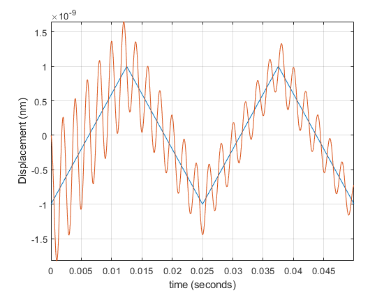
error = x-x_model'; figure plot(t,error) axis('tight') ylabel('Displacement (nm)') xlabel('time (seconds)')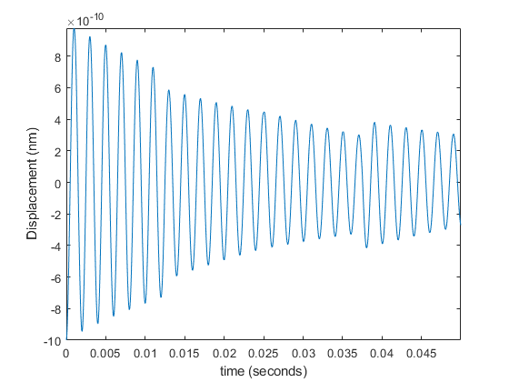